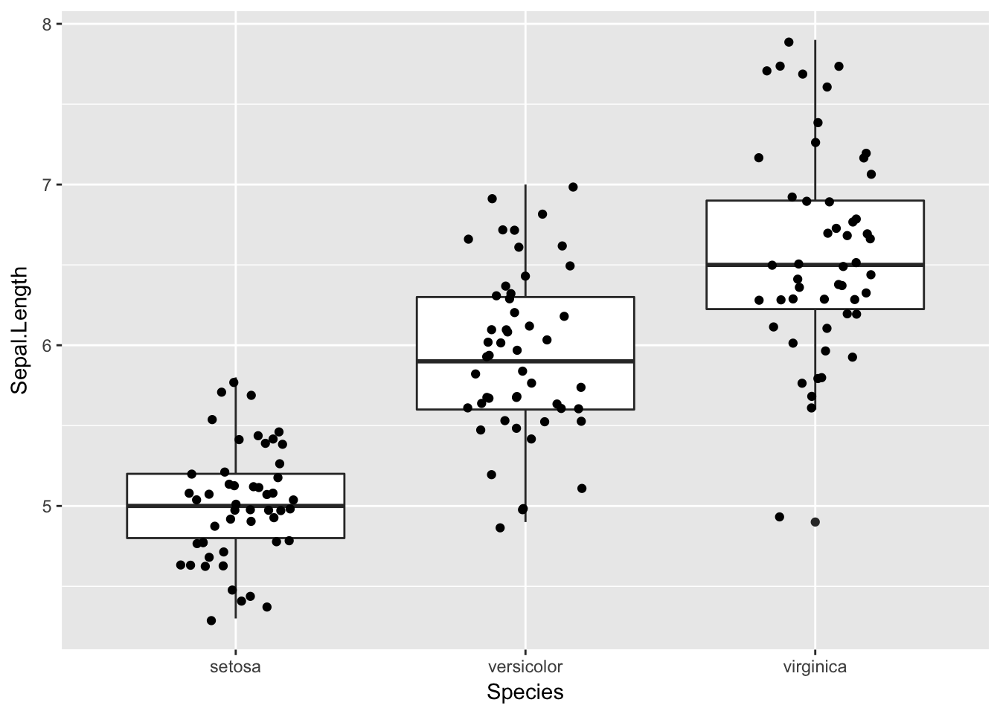

We have learned basic data manipulation with dplyr. Now it is time to learn reshaping of tabular data with tidyr and looping through elements with purrr
dplyr
spread- move values into column namesgather- move column names into valuesseparate- separate variables that share a columnunite- unite a variable that is split across several columns
spread
Imagine you want to calculate a ratio of number of males to females in babynames dataset. You can start as
babynames %>%
group_by(year, sex) %>%
summarise(n = sum(n))And then you need something that from n generates two columns males and females.
babynames %>%
group_by(year, sex) %>%
summarise(n = sum(n)) %>%
spread(sex, n) %>%
head()## Source: local data frame [6 x 3]
## Groups: year [6]
##
## year F M
## <dbl> <int> <int>
## 1 1880 90993 110491
## 2 1881 91954 100745
## 3 1882 107850 113688
## 4 1883 112321 104629
## 5 1884 129022 114445
## 6 1885 133055 107800Challenge 1:
Modify the code above to plot the percent of childern that are male in babynames dataset:
gather
gather is inverse function to spread, its collapses multiple columns into two columns, see ?gather.
Challenge 2:
For the wide transformation of babynames, use gather to transform the dataset back into the long format with three columns.
wide <- babynames %>%
group_by(year, sex) %>%
summarise(n = sum(n)) %>%
spread(sex, n)separate and unite
separate splits a column by dividing values at a specific character. unite unites columns into single column by combining cells.
iris dataset
Famous Fisher’s dataset with measurements of sepal / petal length and width for Iris setosa, versicolor, and virginica.
Let us start with some data inspection. What is the distribution of Sepal.Length for each specie?
ggplot(iris, aes(x = Species, y = Sepal.Length)) +
geom_boxplot() +
geom_jitter(width=0.2)
Instead of boxplots and data points, we can plot violins and means.
stats <- iris %>%
group_by(Species) %>%
summarize(average = mean(Sepal.Length),
se = sd(Sepal.Length) / sqrt(n())) %>%
ungroup()
ggplot(iris, aes(x = Species, y = Sepal.Length)) +
geom_violin() +
geom_pointrange(data= stats, aes(x = Species, y = average,
ymin = average-se, ymax = average+se), size=0.5)Or if somebody insist - barplots and error bars.
ggplot(stats, aes(x = Species, y = average, fill = Species)) +
geom_bar(stat="identity") +
geom_errorbar(data= stats, aes(ymin = average-se, ymax = average+se), width=0.5) +
ylab("Sepal.Length")Challenge 3
Now try to visualise not only Sepal.Length but also the remaining three variables into the one graph.
purr
apply a function to each element of a vector
map(.x, .f, ...)map_lgl(.x, .f, ...)map_chr(.x, .f, ...)map_int(.x, .f, ...)map_dbl(.x, .f, ...)map_df(.x, .f, ..., .id = NULL)walk(.x, .f, ...)